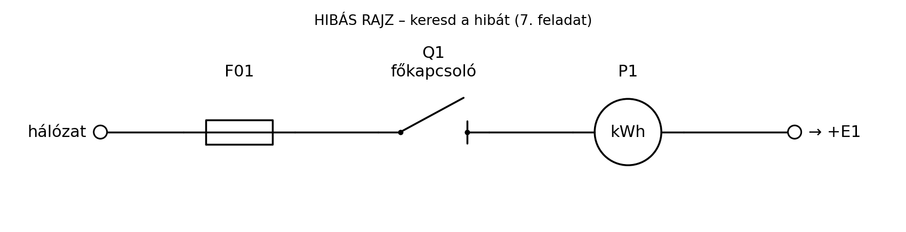
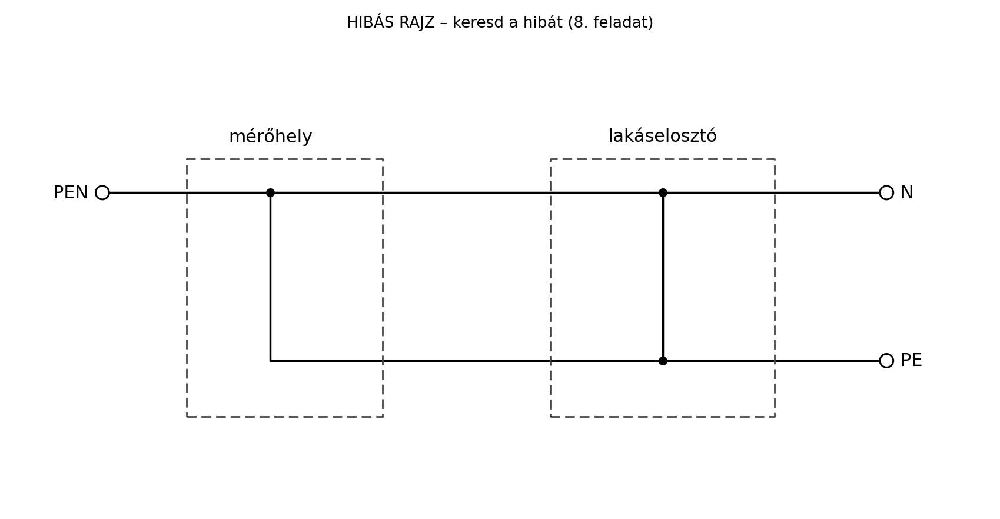

A kapcsolódó elmélet: tankönyv, 17.1 alfejezet.
Mintaház-lépés. A Mintaház (tankönyv) körtáblájából a ház 14 körének beépített teljesítménye fázisonként (a 17.2 (tankönyv, 17.2) kiosztása szerint): L1 10 200 W, L2 9 300 W, L3 8 850 W, összesen 28 350 W. Ebből jutunk el a csatlakozási igényig.
Eredmény. A csatlakozási igényt (a folyamat 1. lépése) ezekkel az adatokkal nyújtjuk be: háromfázisú, 3×32 A.
Bár a mérő felszerelése és a plombálás a hálózati engedélyes feladata, a szerelő a következő lépéseket teszi meg a mérőhelyen:
1. feladat (A): Sorold fel a mérőhelyen belüli egységek helyes sorrendjét a hálózati oldaltól a fogyasztói oldal felé haladva!
2. feladat (A): Mi a plombálás célja? Nevezz meg legalább két olyan elemet, amelyet általában plombálnak!
3. feladat (B): Egy lakóházban a mérőhelyen a főbiztosító 3×32 A, a csatlakozóvezeték réz, a hálózati engedélyes szerint a megengedett feszültségesés a mérőhelytől (a főkapcsolótól) a lakáselosztóig, vagyis a fővezetéken nem haladhatja meg a 3%-ot. Számítsd ki, hogy mekkora maximális hossza lehet a fővezetéknek, ha a hatásos teljesítmény 20 kW, a teljesítménytényező , a vonali feszültség 400 V, és a vezeték ellenállása rézre , keresztmetszete ! A háromfázisú, szimmetrikus terhelésű kör vonali feszültségesése közelítőleg , ahol a vonali áram, a fővezeték (nyomvonal) egyirányú hossza (szimmetrikus terhelésnél az N-vezetőn nem folyik áram). Ellenőrizd a nagyságrendet!
4. feladat (B): Rajzold le egyvonalas kapcsolási rajzon a mérőhelyet: hálózati oldal, főbiztosító, fogyasztásmérő, főkapcsoló, lakáselosztó bemenet. Jelöld meg, hol van plombálás. (A rajz szöveges leírása is elég.)
5. feladat (C): Egy meglévő mérőhelyen a fogyasztó villanyórájának mérőszekrényén a plomba sérült. A szerelő észreveszi, de nem jelenti. Milyen veszélyei vannak ennek? Mi a helyes eljárás?
6. feladat (D): A hálózati engedélyes képviselője a mérőhely átvételekor azt tapasztalja, hogy a mérőhelyen a nullavezető és a védővezető a fogyasztói oldalon össze van kötve (TN-C-S rendszerben). Milyen hibát jelenthet ez, és miért kell javítani? Fogalmazz meg legalább két lehetséges következményt!
Hibás mérőhelyek (7–12.). Minden esetben nevezd meg a hibát, a kockázatot, a teendőt, és azt, hogy ki javíthatja (szerelő vagy hálózati engedélyes).
7. feladat (B):

8. feladat (B):

9. feladat (B): A vezérelt mérő utáni körre egy dugaszolóaljzatot szereltek a garázsban, hogy olcsóbb árammal lehessen tölteni a szerszámokat.
10. feladat (C): A háromfázisú mérőhely átépítése után a hőszivattyú kompresszora zajos, és nem termel hőt. A bekötésben L2 és L3 helyet cserélt.
11. feladat (C): A fővezeték 5×4 mm² réz, a főbiztosító 3×32 A.
12. feladat (C): A plombák sértetlenek, de a mérőszekrény ajtaja nem zárható, és a mérő előtti kapcsok fedele hiányzik.
Önellenőrzés – válaszok
1. feladat: csatlakozóvezeték bevezetés → főbiztosító → fogyasztásmérő → főkapcsoló → fővezeték/lakáselosztó.
2. feladat: A plombálás célja az illetéktelen hozzáférés fizikai megakadályozása és a mérés hitelességének védelme. Általában plombálják a főbiztosítót, a fogyasztásmérőt, a mérőváltókat, a mérő előtti csatlakozókapcsokat.
3. feladat: Adott: , , , → , , . Keresett: a fővezeték maximális egyirányú hossza .
A vonali áram háromfázisú körben:
A háromfázisú vonali feszültségesés képletéből: Ebből :
Behelyettesítve:
Ellenőrzés: a ≈137 m egyirányú nyomvonalhossz (a vezeték nem felezendő) 10 mm² réznél számítási eredmény; ilyen hosszú fővezeték már nagy épületet feltételez, a valóságban általában rövidebb. Megjegyzés. Egyfázisú (fázis + N) körben a két vezető miatt a képlet 2-es szorzót használ, és a viszonyítási alap az fázisfeszültség; itt háromfázisú, szimmetrikus körről van szó, ezért szerepel. A 3 %-ot a feladat a fővezetékre adja meg, ezért a teljes 12 V-ot erre osztottuk. Ha a 3 % a csatlakozási ponttól számítana, a csatlakozóvezeték esését le kellene vonni (pl. 1 % esésnél a fővezetékre 2 % = 8 V marad, és ) (ellenőrizendő: hálózati engedélyes előírása). (Pontosabb használathoz az áramot a terhelésből, a vezeték impedanciájából kell számolni. A feladat tanító jellegű.)
4. feladat: A minta a 17.1.4 pontban lévő egyvonalas rajz (főbiztosító → mérő → főkapcsoló, PEN-szétválasztással). A rajz szöveges leírása: - Hálózati oldal: L1, L2, L3 és PEN bevezetés (TN-C szakasz). - Főbiztosító (3 pólusú) a fázisvezetőkön, plombával. - Fogyasztásmérő (3 fázisú, közvetlen) a fázisokon és nullán, plombával. - Főkapcsoló (3 vagy 4 pólusú; az N bontása a hálózati engedélyes előírása szerint (ellenőrizendő)), fogyasztói oldali; a PEN/PE nem kapcsolható. - PEN-szétválasztás a hálózati engedélyes által elfogadott ponton: innen N (világoskék) és PE (zöld-sárga) külön fut, és többé nem köthető össze. - Lakáselosztó bemenete a főkapcsoló után. - A plombálást a főbiztosító és a mérő körül jelöljük.
5. feladat: A sérült plomba arra utal, hogy valaki megkísérelhette a mérés megkerülését vagy a mérőhöz való hozzáférést. Ha a szerelő nem jelenti, a szabálytalan vételezés gyanúja őt is érintheti, és a fogyasztóval szemben mérési szabálytalansági eljárás indulhat (ellenőrizendő: hatályos jogszabályi szankciók, elosztói szabályzat). A helyes eljárás: azonnal értesíteni a hálózati engedélyest, a mérőhöz nem nyúlni, a munkát addig szüneteltetni, ameddig a jegyzőkönyv el nem készül.
6. feladat: TN-C-S rendszerben a PEN-t a hálózati engedélyes által elfogadott ponton (jellemzően a mérőhelyen vagy a fogyasztói főelosztóban) választják szét; attól kezdve a PE és az N szigorúan külön fut (ellenőrizendő: hálózati engedélyes műszaki feltételei). Ha a fogyasztói oldalon összekötik őket, a védővezetőn üzemi áram folyhat, ami:
Ha az összekötés nem a mérőhelyen, hanem a FI után (a lakáselosztóban, a FI terhelés felőli oldalán) van, akkor a FI kiold, vagy – kis terhelésnél – érzéketlenné válik (lásd Lakás- és épületelosztó felépítése (tankönyv, 17.2)). Javítás: a PEN szétválasztás után a PE és N sín külön, közöttük nincs összekötés a mérőhely fogyasztói oldalán.
7. feladat: A főkapcsoló a mérő elé került. Kockázat: plombálatlan, hozzáférhető rész a mérés előtt, mérés nélküli vételezés lehetősége. Helyes sorrend: F01 → P1 → Q1. Mivel a mérő előtti rész és a plomba érintett, a javítást a hálózati engedélyessel egyeztetve végzik: a plombát és a mérő bekötését ő bontja, a szerelő a főkapcsolót a mérő utánra helyezi.
8. feladat: Az N és a PE a lakáselosztóban újra össze van kötve. Kockázat: üzemi áram a PE-n, az EPH-n és a fémtesteken, a testek potenciáljának emelkedése, tűzveszély, a FI hibás működése. Teendő: az összekötés megszüntetése feszültségmentes állapotban, utána N–PE szigetelés- és PE-folytonosságmérés. Szerelő javíthatja (fogyasztói oldal).
9. feladat: A vezérelt körre csak fix bekötésű, hőtárolós fogyasztó köthető, aljzat nem. Kockázat: szerződésszegő vételezés a kedvezményes tarifán, a kör funkciója sérül. Teendő: az aljzat eltávolítása és az általános körre helyezése. A fogyasztói oldali bontást szerelő végzi; ha plombált rész is érintett, a hálózati engedélyest be kell vonni.
10. feladat: Két fázis felcserélése megfordítja a forgásirányt (7.4 (tankönyv, 7.4)). Kockázat: a kompresszor károsodhat; azonnal le kell állítani. Teendő: fázissorrend mérése a Q1 kimenetén. Ha a csere a fogyasztói oldalon történt, a szerelő javítja feszültségmentesítve; ha a mérő előtt vagy a mérőn, a hálózati engedélyes.
11. feladat: A láncban a 32 A-es védelemhez a 4 mm²-es vezeték terhelhetősége a szerelési mód szerint kevés lehet (védőcsőben jellemzően 32 A alatt van; ellenőrizendő: MSZ HD 60364-5-52), és a hálózati engedélyes által előírt legkisebb fővezeték-keresztmetszetet sem biztos, hogy teljesíti (gyakran 10 mm²; ellenőrizendő). Kockázat: túlmelegedés, tűz, átvétel megtagadása. Teendő: fővezeték cseréje (a Mintaházban 5×10 mm²); a szerelő végzi, a mérőhöz csatlakozó végeket a hálózati engedéllyel egyeztetve.
12. feladat: A hiányzó kapocsfedél mögött feszültség alatti, mérés előtti részek érinthetők, a szekrény nem véd az illetéktelen hozzáféréstől. Kockázat: áramütés, mérés nélküli vételezés. Teendő: a helyet biztosítani, a hálózati engedélyest azonnal értesíteni (a plombált rész az ő hatásköre); a zárszerkezet javítását a szerelő végezheti, ha a plombált részhez nem nyúl.